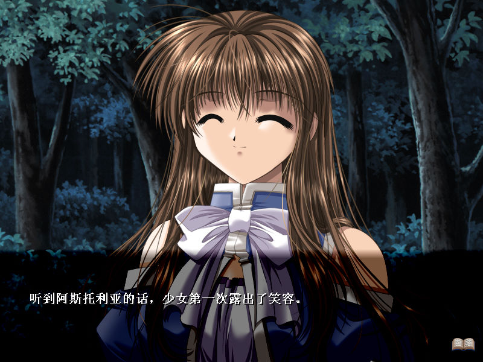

名稱：蒼青色的月光／蒼月 (簡中版) 簡介：Studio e.go 2001年出品的18禁戀愛冒險故事閱讀遊戲 [待補]。  備註：本版為2002年EGC簡中漢化版（缺動畫檔） 保護：不明 限制：遊戲只能在Win9x系統上執行，可進行下列修正： moongb.exe A1 30 6C 43 00 50 EB 36 -- -- -- -- 備註：簡中版必須在簡中系統上執行，否則文字會亂碼。 操作：Ctrl = 快速略過劇情
